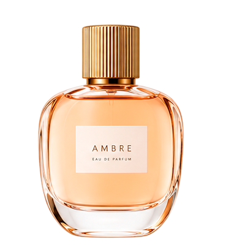
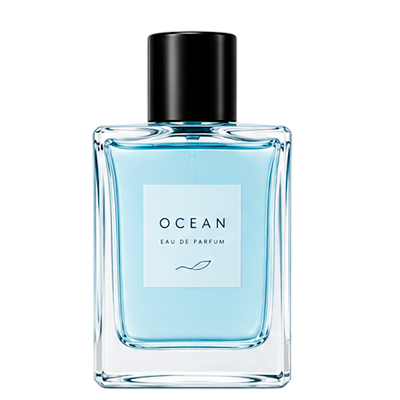
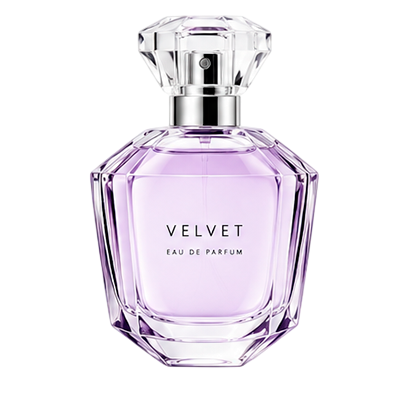
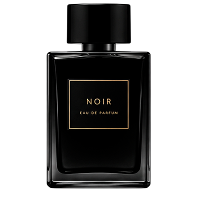

ODORIS · КОЛЛЕКЦИЯ ПО СЕЗОНУ
Сезонные
ароматы
Настроение каждого времени года — в нотах, которые хочется носить именно сейчас.
Открыть подборку
SCENT OF THE SEASON
Найди своё время года
ПОДБОР ПО СЕЗОНУ
Четыре сезона.
Бесконечно много ощущений.
Лёгкие цитрусы для солнечных дней, звонкая весенняя свежесть, согревающие древесно-амбровые аккорды осени и плотные шлейфы для зимы.
01 / ВЕСНА↗

МАРТ — МАЙ
Зелёная гармония
Свежесть зелени · бергамот · жасмин02 / ЛЕТО↗

ИЮНЬ — АВГУСТ
Oceanic Drift
Морской бриз · цитрусы · соль03 / ОСЕНЬ↗

СЕНТЯБРЬ — НОЯБРЬ
Velvet Noir
Тёплый сандал · специи · табак04 / ЗИМА↗

ДЕКАБРЬ — ФЕВРАЛЬ
Nocturne
Ваниль · ладан · смола · мускусВЫБОР СЕЗОНА · ОСЕНЬ В ODORIS
L’Automne Doré
Обволакивающий, согревающий и благородный. Золотистая амбра, кашемировое дерево и деликатная нота пряной корицы создают ощущение тепла и уюта в прохладные осенние дни.
Подробнее об ароматеТВОЙ АРОМАТ. ТВОЁ ВРЕМЯ.
Пусть сезон запомнится ароматом.
Исследуй коллекцию и найди композицию, которая подходит именно тебе.
Смотреть всю коллекцию